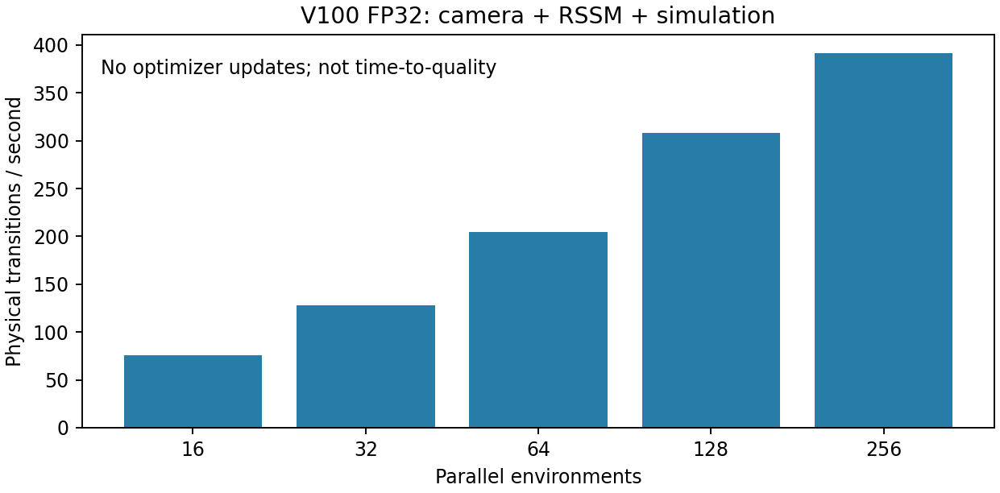

训练前复核 · 2026-11-01
正式训练未启动，全部预检均为零次参数更新。第一次四卡训练与两小时巡检维持停止。此包供用户在首次更新前核对。
完整启动配置与来源 · 机器可读验收 · 未审批模板 · 第一次训练最终报告
实现与验收
| 交付 | 验收结果 |
|---|
| PPO权重加载 | 确定性动作误差0；归一化统计不变 |
| PPO更新循环 | 4个mini-epoch、16个反传批次；两个优化器均0次step |
| PPO终止边界 | 真实重置68条边界排除；真失败/超时自举测试通过 |
| PPO断点 | 新格式保存与重载通过；实际训练后的恢复尚未测量 |
| RSSM更新接口 | RSSM/奖励/关节/失败头有有限非零梯度；encoder和图像decoder冻结 |
| 新模型缓存路径 | 从完整历史重新采样状态；原H1/H4门槛通过；拒绝过期缓存 |
| RSSM断点 | 零更新保存/重载通过；新模型自动要求重新验收 |
| 动作方向 | 4状态×2方向小样本；4组超过噪声；3组符号一致；不判定通过 |
| 启动限制 | 配置与代码hash绑定；未审批入口被拒绝，未创建训练目录 |
| 回归测试 | 21项通过 |
通过的是实现预检。尚未测量参数更新后的收益、收敛速度或模型更新引起的策略变化。动作方向的小样本不能转换成“75%准确率”。
V100适配

| 环境数 | 采集转移/秒 | 优化器更新 |
|---|
| 16 | 75.5 | 0 |
| 32 | 128.3 | 0 |
| 64 | 204.5 | 0 |
| 128 | 307.8 | 0 |
| 256 | 391.1 | 0 |
FP32、sm70、PyTorch 2.1 / CUDA 11.8；BF16关闭。256环境复测约388.7条/秒；采样到总显存约5.57GiB，并非长训练峰值。PPO损失复用上游；自适应学习率的KL测量修正了小方差下负值偏差，同策略KL现为0。
固定开发集基线
| 开发 seed | 回报 | 旋转 rad | 失败 / episode |
|---|
| 71001 | 1052.21 | 56.94 | 0/8 |
| 71002 | 1055.32 | 55.67 | 0/8 |
| 71003 | 1107.38 | 57.63 | 0/8 |
| 71004 | 1089.68 | 59.82 | 0/8 |
32回合平均回报1076.15；4个批均值标准差26.86。独立最终测试集未打开。每个episode的分项奖励、旋转与初始物理张量已保存；GPU仿真仅有相同seed不足以保证完整轨迹一致。
待核对的两个短试跑
- PPO：256环境，16步rollout，累积至少16384个有效样本，minibatch4096×4，初始LR1e-4；最多16个epoch，30分钟硬上限。采集部分约11–12分钟，更新与评估额外计时。
- RSSM：只更新动力学与任务预测头，冻结encoder、图像decoder和actor；batch8、chunk32、H4、LR1e-5，最多250步，40分钟硬上限。按预检估计拟合约23–26分钟，重建缓存与评估额外计时。
试跑结束先开发集验收。RSSM一旦改变，旧隐状态不可复用；重新生成缓存，并验证同一个actor的物理表现。不会自动续接SM长训或四卡12小时对比。
来源与自研范围
物理任务、传感器、网络、发布权重和PPO损失来自固定版本WM-Craftnet。数据对齐、缓存恢复、四步BPTT/critic、失败头与当前RSSM多步适配为本项目代码。SM参考库是第三方；当前实现不等同于官方SuperMimic完整复现。其物理状态/仿真上下文监督没有被原样移植到我们的随机隐状态模型。
WM-Craftnet论文的预训练主要指WSM迁移，默认入口没有指定预训练actor。论文九物体表1为414.3与753.3回报，不能解释成同一发布策略微调提升81.8%，也不能与我们单物体1050分直接比较。未找到可核实的训练GPU小时；3000epoch不是时长。
停止规则
正式实验应由数据量、开发集曲线和稳定性决定是否继续，资源时长作为上限。拟定目标为回报提高5%、旋转不降、失败率不劣于预设2百分点容差；连续3次开发验收后做锁定测试。平台停止须先确保测量噪声足以区分1%变化。具体正式采样上限待试跑后冻结，不声称达到全局收敛。细节见项目docs/EXPERIMENTS.md。
WM-Craftnet论文 · 固定上游源码 · SuperMimic论文